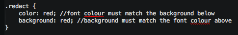
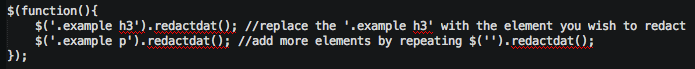

Getting started
Download redactdat.js, user.js and redact.css from GITHUB.
Include redactdat.js, user.js and redact.css in your html.
Change your desired redacting colour in redact.css.
Change your target elements in the user.js.
It surprises the user with redacted text.
It adds the element of mystery to a page.
It may make the user want to rage-quit.
It basically accomplishes annoyance.
See below for example.
Bulbasaur Ivysaur Venusaur Charmander Charmeleon Charizard Squirtle Wartortle Blastoise Caterpie Metapod Butterfree Weedle Kakuna Beedrill Pidgey Pidgeotto Pidgeot Rattata Raticate Spearow Fearow Ekans Arbok Pikachu Raichu Sandshrew Sandslash Nidoran Nidorina Nidoqueen Nidoran Nidorino Nidoking Clefairy Clefable Vulpix Ninetales Jigglypuff Wigglytuff Zubat Golbat Oddish Gloom Vileplume Paras Parasect
Venonat Venomoth Diglett Dugtrio Meowth Persian Psyduck Golduck Mankey Primeape Growlithe Arcanine Poliwag Poliwhirl Poliwrath Abra Kadabra Alakazam Machop Machoke Machamp Bellsprout Weepinbell Victreebel Tentacool Kadabra Alakazam Exeggutor Cubone Marowak Hitmonlee Hitmonchan Lickitung Koffing Weezing Rhyhorn Rhydon Chansey Tangela Kangaskhan Horsea Seadra Goldeen
Download redactdat.js, user.js and redact.css from GITHUB.
Include redactdat.js, user.js and redact.css in your html.
Change your desired redacting colour in redact.css.
Change your target elements in the user.js.
To configure the colour of redaction, go to redact.css and alter:
To configure which elements are redacted, go to user.js and alter:
